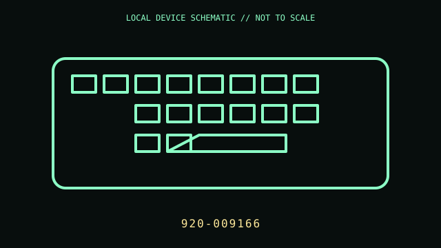

[ KEYBOARDS AND INTEGRATED POINTING DEVICES // IDENTIFIED COMPONENT ]
Logitech ERGO K860
Split, curved ergonomic wireless keyboard, cataloged here by Logitech part number 920-009166.

MODEL IDENTIFICATION: Manufacturer identity: 920-009166. Compare the unit label, regional suffix, and revision against the manufacturer's manual before repair or compatibility claims.
Model specifications
| Catalog subcategory | Keyboards and integrated pointing devices |
|---|---|
| Exact model / ID | 920-009166 |
| Model-specific features | Bluetooth Low Energy or included USB receiver; split key field with integrated cushioned wrist rest; powered by two AAA batteries. |
| Interface and host support | Wireless keyboard input only; receiver generation and included regional accessories should be checked against the package and underside PID. Options in Logi Options+ require a supported OS. |
| Revision / driver caveat | The part number and receiver supplied can vary by region or bundle. Ergonomic shape does not establish medical suitability; use a gradual adjustment period and a neutral wrist position. |
Preservation and service notes
Replace batteries with the specified polarity and chemistry. Clean the wrist rest with a lightly damp cloth only; avoid soaking the fabric and inspect the receiver storage/battery cover tabs.
Record the as-found label, accessories, host OS, driver/firmware version, and test method. Separate observed condition from published specifications; do not treat family-level feature claims as proof of a unit's revision.
Primary manufacturer documentation
- Logitech support — ERGO K860Manufacturer search portal for the model's manuals, setup, and product details.
- Logitech keyboard catalogManufacturer category listing; confirm the exact PID and included receiver against the device label and package.
Manufacturer pages may change or retire. Preserve a copy of the applicable manual and note its revision when documenting a physical unit.